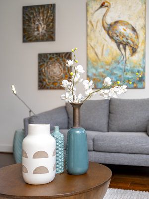
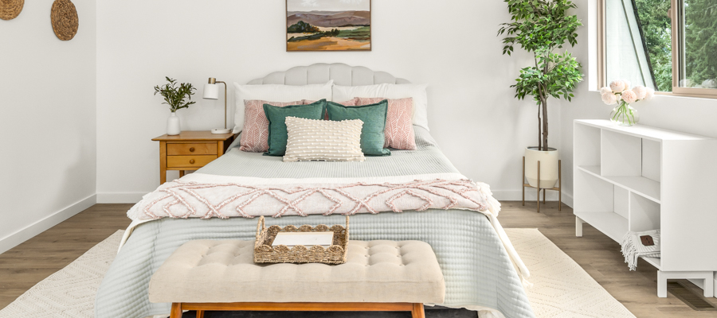
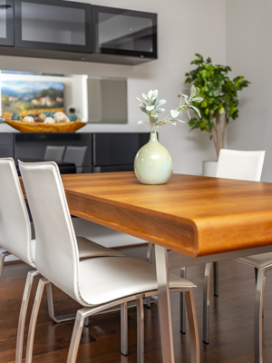
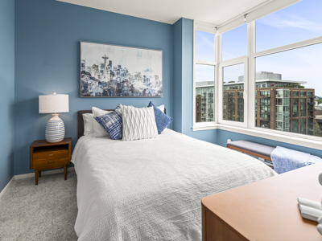

<div class="container">
<section class="staging-collection">

  <div class="gallery">
    <div class="text-section">
      <p class="top-paragraph hero-subtitle">VIRTUAL STAGING COLLECTION</p>
      <div class="bottom-paragraph roboto-slab-about">
        It is difficult to stand out in a sea of vacant home listings. Using virtual staging, you can turn boring rooms into dream properties, which will increase views, attention, and leads for your listing.
<br><br>
Virtual staging - as its name implies - is 100% virtual, so there is no physical labor involved. This will save you the trouble of doing physical work or hiring a moving company.
Virtual staging extends far beyond adding furniture and decor to empty photos. As well as removing and replacing furniture, virtual staging software can even renovate entire rooms.
<br><br><br><br>
<a href="#" class="about-link">View Gallery</a>
      </div>
      <br>

    </div>
    
    
    
    
    
  </div>
</section>
</div>
